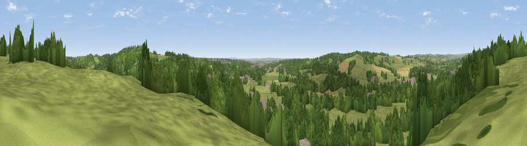

Viewpoint near Little Eaton
#30842 in England · top 50% of its area beats it · near Little EatonThe view, rendered

A 360° render of this exact spot computed from the terrain model, tree cover and land cover — summer colours, afternoon light, calibrated against photographs of famous viewpoints. Real trees, hedges and buildings will differ in detail.
The panorama
Grey silhouette: terrain skyline in each direction (720 bearings, Earth curvature and refraction included). Dashed green: skyline with trees (+15 m) and buildings (+8 m) as obstacles. Blue strip: how far the ground is visible on each bearing.
Where the view opens
Wedge length = distance to the farthest visible ground on that bearing (vegetation-aware). Rings at 10, 25 and 50 km.
What fills the view
50% woodland · 42% grassland · 4% built-up · 3% cropland
Angular shares of the visible panorama (visual magnitude), not map area. Landscape diversity 0.42 (0–1 Shannon).
Key numbers
More beautiful places nearby
The staircase of upgrades: each row has a higher view potential than everything closer. Driving times are estimates from straight-line distance, calibrated against real road routing — check an actual route before setting out.
| Place | Direction | Drive | Score |
|---|---|---|---|
| Viewpoint near Little Eaton | E · 1 km | ~4 min | 64.3 |
| Viewpoint near Hazelwood | NNW · 4 km | ~10 min | 66.3 |
| Alport Height | NNW · 11 km | ~21 min | 73.9 |
| Tissington Hill | WNW · 23 km | ~38 min | 75.5 |
| Viewpoint near Stanton under Bardon | SSE · 31 km | ~48 min | 76.0 |
| Viewpoint near Woodhouse Eaves | SSE · 31 km | ~49 min | 77.7 |
| Viewpoint near Mow Cop | WNW · 52 km | ~73 min | 78.9 |
| Viewpoint near Mow Cop | WNW · 52 km | ~74 min | 80.2 |
52.97573, -1.46794 · source: screening · position refined by local search. Computed location — check access rights before visiting.